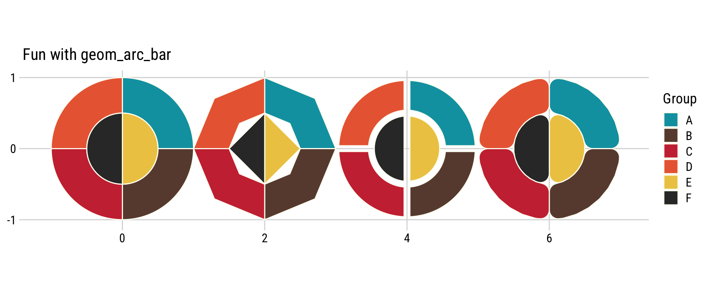

Utiling geom_arc_bar for creation of geometric art
r
puzzle
ggplot
patchwork
ggforce
Author
Chisato
Published
January 19, 2025
Geometry x Colors Experimentation
I’m still obsessing with Pentomino dataset that I have been using.
I love using the ggforce package for creating stunning visualizations. ggforce essentially allows you to extend the ggplot2 capabilities, i.e. ggplot2 on steroid. My go-to functions usually include geom_regon, geom_parallel_sets, and geom_circle. But recently, I realized there’s functions I haven’t fully explored, one of them being geom_arc_bar.
Setups and Pakcages Used in This Blog Post
# Load required librarieslibrary(tidyverse) # Data wrangling and general utilitieslibrary(ggforce) # Extra geoms for ggplot2 library(cowplot) # Additional plotting helperslibrary(patchwork) # Combine multiple ggplots effortlessly!# Pentomino Solutions Dataset pento_sol <-read_csv("https://raw.githubusercontent.com/chichacha/pentomino/refs/heads/main/pentomino_solution.csv")### Convert Solution to XY position data framepento_sol_df <- pento_sol |>mutate(solution_num =row_number()) |>mutate(sol_text =str_split(sol_text, " ")) |>unnest(sol_text) |>group_by(solution_num) |>mutate(y =row_number()) |>ungroup() |>mutate(sol_text =str_split(sol_text, "")) |>unnest(sol_text) |>group_by(solution_num, y) |>mutate(x =row_number()) |>ungroup()pento_min <- pento_sol_df |>filter(sol_text !=".") |># exclude the "." cellsselect(x, y, sol_text, solution_num, dim) |>nest(.by =c(solution_num, dim))# Just using my retro color paletteretro <-c("#00A0B0", "#6A4A3C", "#CC333F", "#EB6841", "#EDC951")retro12 <-colorRampPalette(retro)(12)piece<-c("F","I","L","N","P","T","U","V","W","X","Y","Z")names(retro12) <- piece
Quick Demo of Basic Use geom_arc_bar function
Here’s a demo showing the effects of different geom_arc_bar parameters like segment smoothness (n), expansion or contraction (expand), and rounding of corner (radius). I like that I can draw pie or donut chart without leaving cartesian coordinate.
Simple Example
# Sample datadata <-data.frame(x =c(0,0,0,0,0,0),y =c(0,0,0,0,0,0),r0=c(rep(0.5,times=4),0,0),r=c(rep(1,times=4),0.5,0.5),start =c(0, pi/2, pi, 3*pi/2,0,pi),end =c(pi/2, pi, 3*pi/2, 2*pi,pi,2*pi),group=c("A","B","C","D","E","F"))# Plot using geom_arc_barggplot(data) +geom_arc_bar(aes(x0 = x, y0 = y, r0 = r0, r = r, start = start, end = end, fill = group ), color="#fffff3") +geom_arc_bar(aes(x0 = x+2, y0 = y, r0 = r0, r = r, start = start, end = end, fill = group ), color="#fffff3", n=4) +## n to control the number of points used to draw a full circle.geom_arc_bar(aes(x0 = x+4, y0 = y, r0 = r0, r = r, start = start, end = end, fill = group ), color="#fffff3", expand=unit(-1,"mm")) +## expand to control expansion, negative value is used to contractgeom_arc_bar(aes(x0 = x+6, y0 = y, r0 = r0, r = r, start = start, end = end, fill = group ), color="#fffff3", radius=unit(3,"mm"), n=36) +theme_minimal_grid(font_family="Roboto Condensed") +labs(title ="Fun with geom_arc_bar", fill ="Group") +coord_fixed() +scale_fill_manual(values=c(retro,"#323433")) +scale_x_continuous(breaks=c(0,2,4,6)) +scale_y_continuous(breaks=c(-1,0,1))

Slightly Abstract Pentomino Solutions
What happens when a classic Pentomino puzzle collides with geometric abstraction? These visuals are still valid solutions to the Pentomino problem, but now they blur the line between puzzles and art. By experimenting with shapes, colors, these solutions have transformed into something entirely new: playful geometric art with a hint of order and chaos 🪄🐰🎩